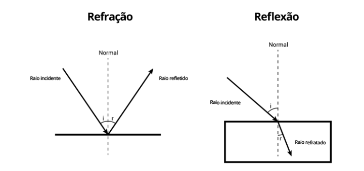
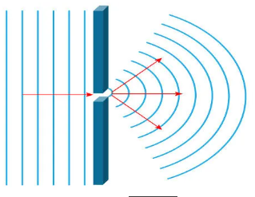

◉ Propagação das Ondas Eletromagnéticas
Ondas eletromagnéticas transportam energia através do espaço sem transportar matéria.
Esse tipo de onda é formado por campos elétricos e magnéticos perpendiculares entre si,
além disso, não precisa de um meio material para propagar-se. No vácuo, as ondas eletromagnéticas
propagam-se na velocidade da luz, cerca de 3,0.108 m/s.
Uma onda eletromagnética é formada por campos elétricos e magnéticos oscilantes e perpendiculares
entre si. A direção de propagação da onda eletromagnética, por sua vez, é perpendicular
(ângulo de 90º) aos vetores de campo elétrico e magnético.
Devido ao ângulo formado entre a perturbação e a direção de propagação, as ondas eletromagnéticas
são caracterizadas como transversais. Como todas as ondas, podem transferir energia entre diferentes
pontos do espaço, mas fazem-no sem que haja qualquer transporte de matéria, uma vez que não são capazes disso.
◉ Propagação das Ondas Eletromagnéticas no espaço livre
A propagação eletromagnética no espaço livre, ou vácuo, ocorre quando campos elétricos e magnéticos se geram
mutuamente e se propagam perpendicularmente, transportando energia na forma de radiação eletromagnética:
As ondas eletromagnéticas não precisam de um meio material para se propagar.
No vácuo, propagam-se na velocidade da luz, cerca de 3,0.108 m/s.
As ondas eletromagnéticas são transversais, ou seja, direcionam-se perpendicularmente à direção da propagação.
As ondas eletromagnéticas podem sofrer reflexão, refração, absorção, difração, interferência, espalhamento e
polarização.
A propagação eletromagnética no espaço livre pode ser caracterizada como um modelo idealizado, onde uma antena
de transmissão emite sinais que se propagam isotropicamente, sem quaisquer obstáculos à propagação.
◉ Reflexão, difração e dispersão
Qualquer que seja o tipo de onda, ela está sujeita aos fenômenos da reflexão, refração e difração.
A seguir, fizemos breves descrições desses três fenômenos:
• Reflexão: Ocorrerá reflexão sempre que uma onda atingir determinada superfície e voltar a propagar-se no meio
de origem. A onda refletida manterá a velocidade, frequência e comprimento de onda iguais aos da onda incidente.
• Refração: Ocorre refração quando a onda muda seu meio de propagação. A luz do Sol, por exemplo, vem da estrela
através do vácuo e sofre refração ao entrar na atmosfera terrestre. Na refração, a velocidade de propagação da
onda será alterada, pois a mudança de meio gera mudança no comprimento de onda. A frequência das ondas, por
depender da fonte geradora, não é alterada na refração.

• Difração: A difração trata da capacidade das ondas de contornar obstáculos.

Observe que, ao atingirem a fenda, as ondas que se propagavam na água contornaram o obstáculo e chegaram até o
lado oposto dele, porém, com o formato circular. O tamanho da fenda em relação ao comprimento de onda das ondas
influencia na ocorrência do fenômeno, assim, quanto maior for o comprimento de onda em relação à fenda, mais
intensa será a difração.
Clique
aqui
para mais exemplos no phet.colorado.edu